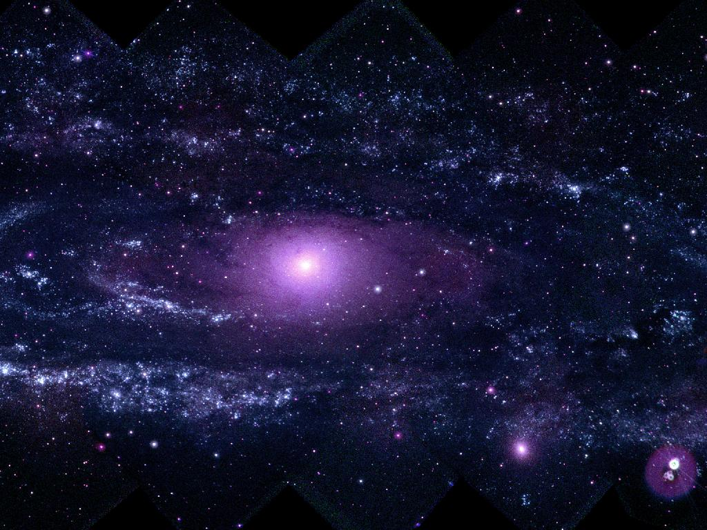

Você sabe o que é uma Galáxia?
Uma galáxia é uma enorme estrutura no espaço, composta por bilhões de estrelas, gás, poeira e matéria escura, unidas pela gravidade. Nossa galáxia, a Via Láctea, é um exemplo de galáxia espiral. As galáxias podem ter diferentes formas, como elíptica, espiral ou irregular, e são classificadas com base em sua aparência.
| Nome | Tipo | Localização |
|---|---|---|
| Andrômeda | Espiral | 2,5 milhões de anos luz |
| Centaurus A | Elíptica | 12 milhões de anos luz |
| NGC 1427A | Irregular | 62 milhões de anos luz |
Para mais informações acesse:
Galáxias, o que são e como são formadas?